I have been passionate about technology for as long as I can remember. Growing up around computers and during the advent of the internet I've experienced the power of technology first hand. In no case has this been more evident than the presentation and consumption of information. The age of the internet has made information more accessible than at any other time in human history and the presentation and dissemination of that information is what drives most technology today. In my work, I continually strive to share my passion for technology with others and give users the tools necessary to accomplish tasks from the menial to the extraordinary. I get no greater joy in my work than seeing someone else have that "eureka!" moment when they realize the possibilities of whatever tool, website, or piece of software they may be using.
{kind=link}
Resume
ddrieck@gmail.com
Employment History
Product and Design Track 2013
Creative Communications, University of Washington, Seattle,WA
Senior Computer Specialist 2007 - 2013
Information Systems Student Assistant 2003 - 2007
Experience
Systems Administration and Design
- Administered over 20 servers running Windows Server 2003, 2008, and Linux in physical and virtual environments.
- Implemented Request Tracker, an open source web-based ticket tracking solution, in Linux environment to 100+ users in 12 departments.
- Investigated and implemented disaster recovery procedures using network-based backup policies.
- Implemented open source server monitoring software for automated system and service outage notifications.
- Developed scripts to create automated print installers for all major operating systems.
- Managed over 150 printers, copiers, kiosks, and scan stations in three campuses across the region.
- Created and administered new domain for over 100 users using knowledge of Windows Server 2003/2008, Active Directory, Group Policy, DNS, and WSUS automated patching resulting in department savings of ~$42,000.
Web Design and Development
- Maintained Dawg Prints website content hosted on Drupal CMS with MySQL backend.
- Created Managed Print Services website structure and content using Drupal CMS.
- Created and maintained Dawg Prints Alerts, a Wordpress site to notify campus of system outages.
Program Management
- Sold and implemented software as a service (SaaS) solution of Request Tracker to 12 departments by gathering requirements from departmental representatives and providing email process audits, training, configuration, and system and user support.
- Appointed to a team that assessed university-wide document management solutions and vendors.
- Manage projects and work of up to three student employees. Assign tasks and monitor progress.
Marketing
- Oversaw creation of marketing materials, messaging, website, and automated print installer packages to help expand the Dawg Prints service into the main provider of student copying and printing on campus.
- Developed marketing strategies and implemented design specifications for new enterprise wide Managed Print Services program.
- Led Creative Communications (C2) Touchpoints team to implement new logo and design for all C2 points of contact.
Customer Support
- Managed Dawg Prints Support help desk team using Request Tracker ticketing system.
- Provided hardware and software support to Dawg Prints servers, stations, and networked printers.
- Provided advanced desktop support for Creative Communications users.
Education
University of Washington Seattle, WA August 2007
Bachelor of Science: Biology, PhysiologySolutionsIQ Seattle, WA March 2012
Certified ScrumMasterUW Professional and Extended Learning Seattle, WA August 2013
Certificate in Web Technology SolutionsCommunity
- Paradox Technology Solutions: pro bono consulting support for home users
- ACMP Change Connect 2013 Symposium Wordpress site development
- Co-Rec Soccer
You can download a copy of my resume here.
Portfolio
I have been creating custom greeting cards for family for many years, developing my Photoshop and InDesign skill in the process. Below are some examples from The Birthday and Valentine's Day Collections.
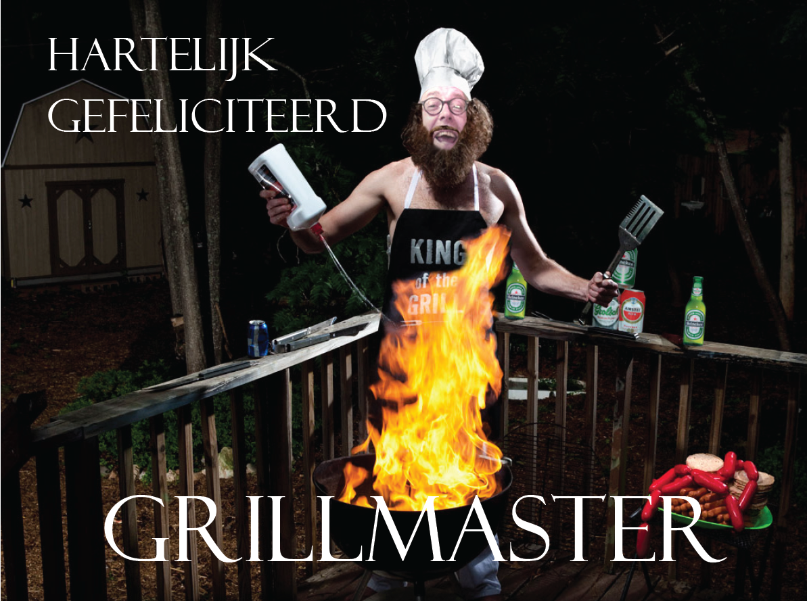 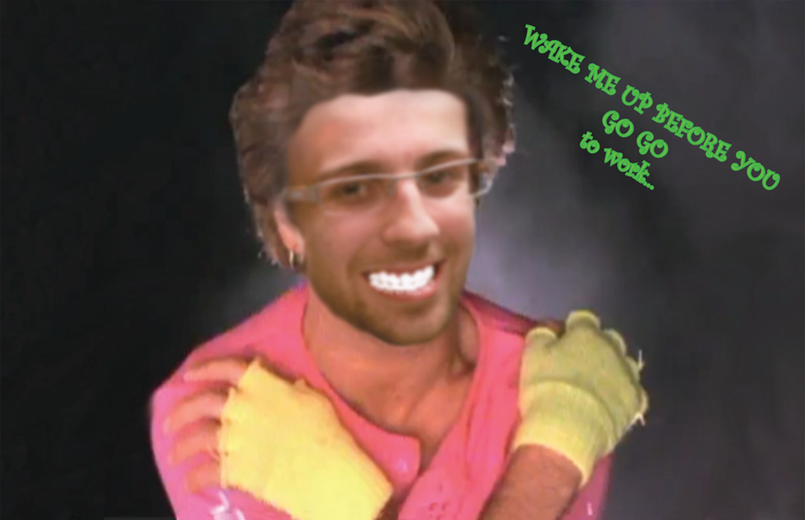 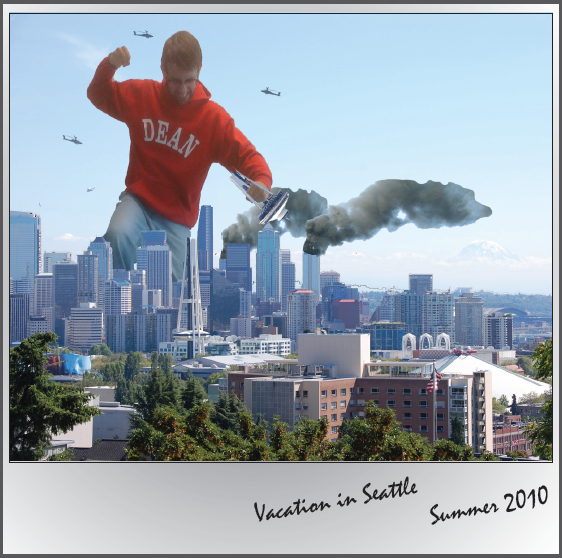 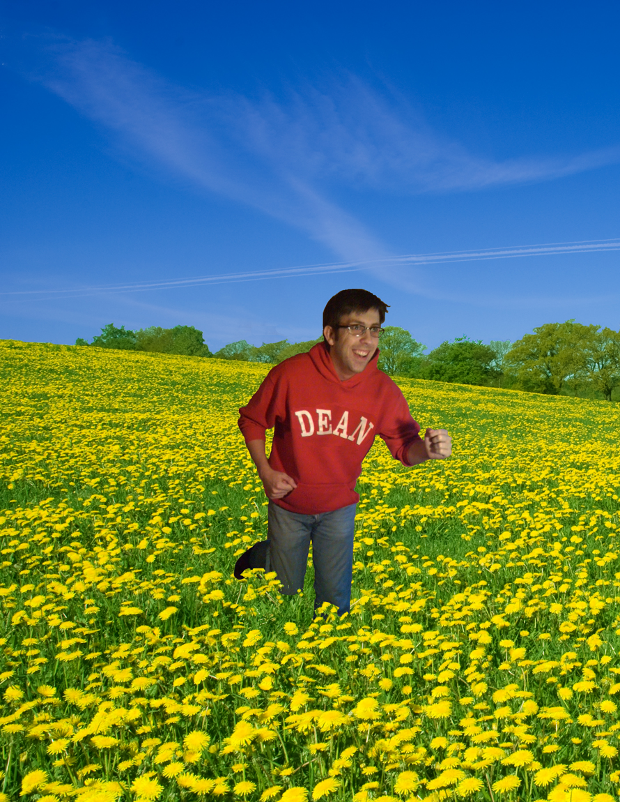 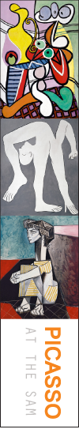{kind=link}
{kind=link}
{kind=link}
{kind=link}
{kind=link}
{kind=link}
{kind=link}

{kind=link}
Dean's Card Company
 ACMP Change Connect Symposium 2013
ACMP Change Connect Symposium 2013
On a one week deadline I was able to modify preexisting wordpress theme to include custom menu and give content creators the ability to add symposium specific information to pages. Changes to theme include symposium specifc header, footer, banner, and menu.
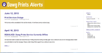Dawg Prints Alerts
Created custom theme for Wordpress blog that is used to inform campus community of system outages.
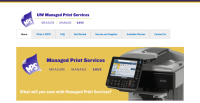UW Managed Print Services
Chose theme and design for new Managed Print Services website running on Drupal Content Management System. Managed content and implemented views and forms to help facilitate in information gathering and dissemination of the new program.
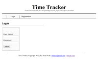Time Tracker
Project site for PHP and MySQL certification course. Designed and built functionality from scratch using CSS, HTML5, and PHP. Created login and registration structure, including routing logic. Implemented session variables to track and display user profile information.
Web Design
One of the many hats I wore during my time at UW was creating signs and print materials for the various programs I supported. Below are several samples from the Dawg Prints and MPS programs that I created using the Adobe Creative Suite. The designs were mainly based on branding rules or templates created by our in-house design group.
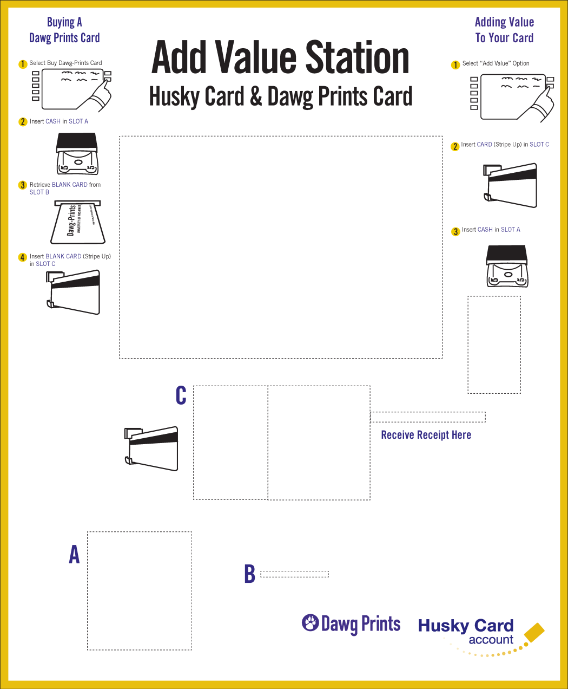 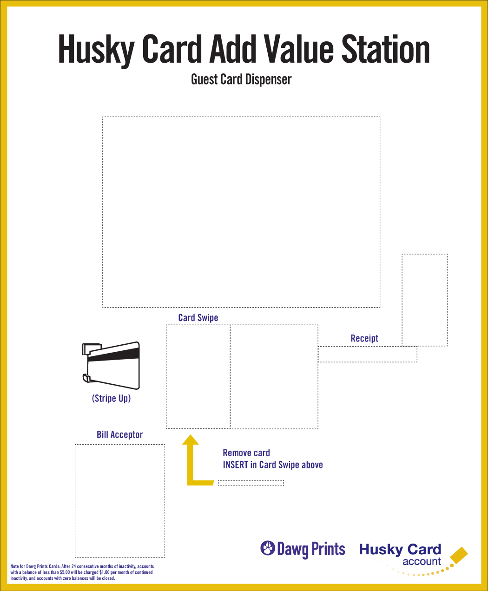 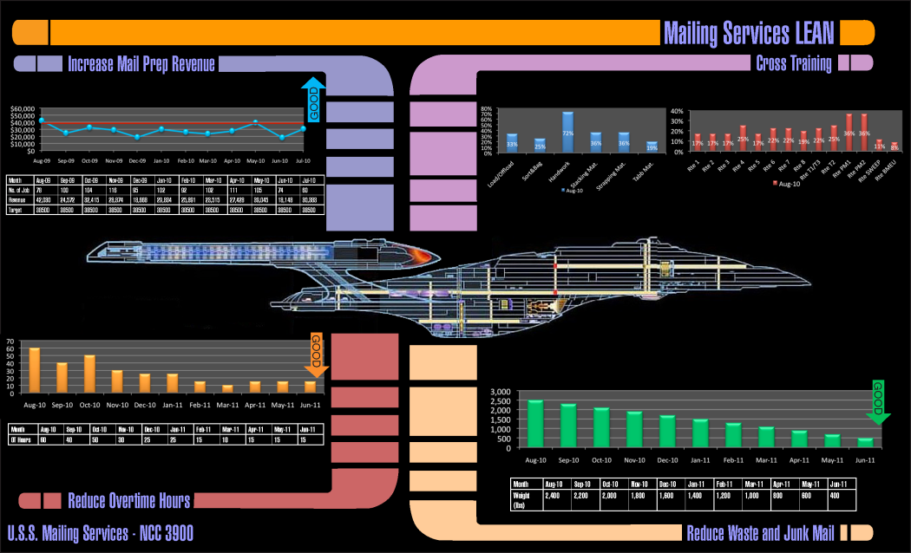 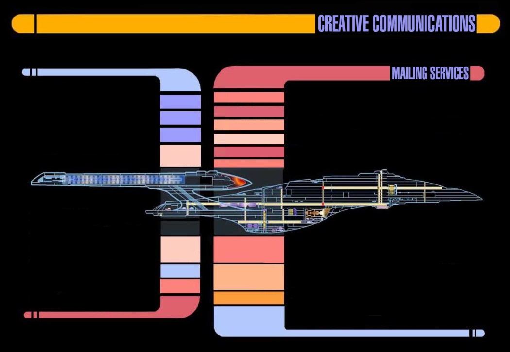{kind=link}
{kind=link}
{kind=link}
{kind=link}

 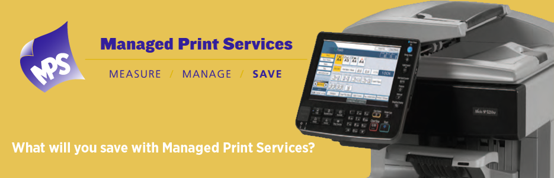
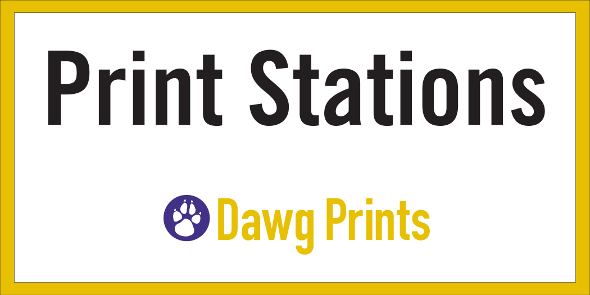
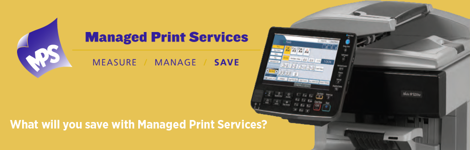
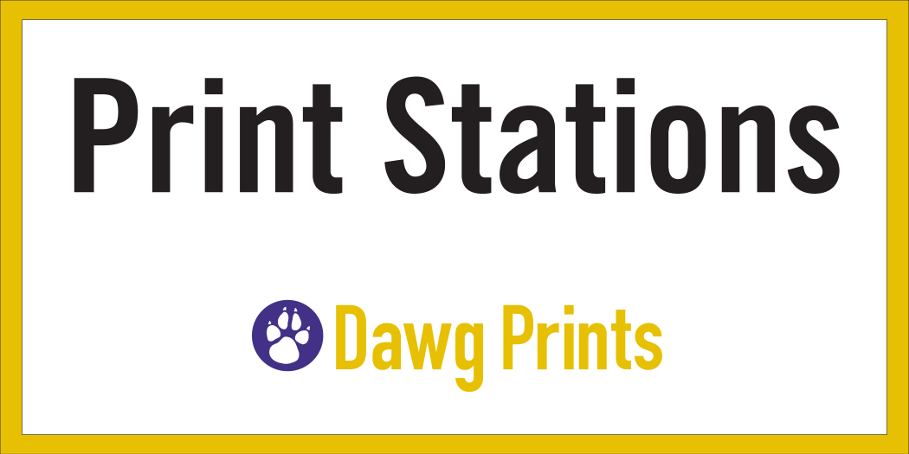
{kind=link}
{kind=link}
{kind=link}
Social Media Links
Look at my social connections. I'm so popular!